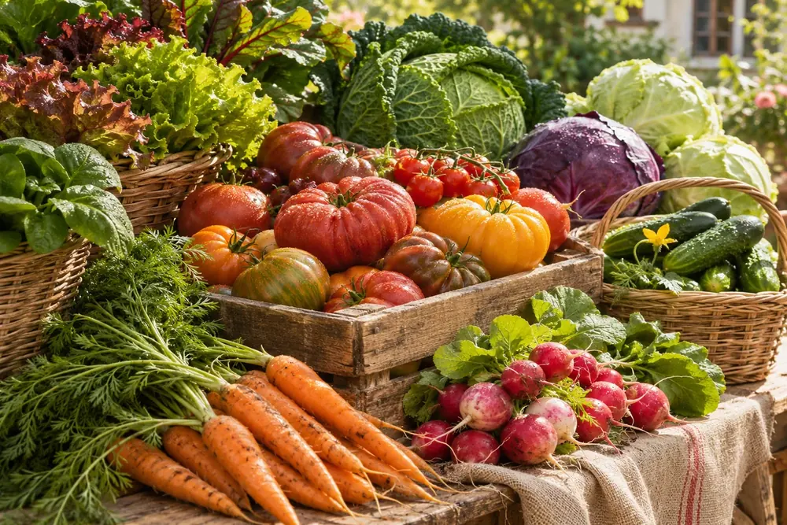
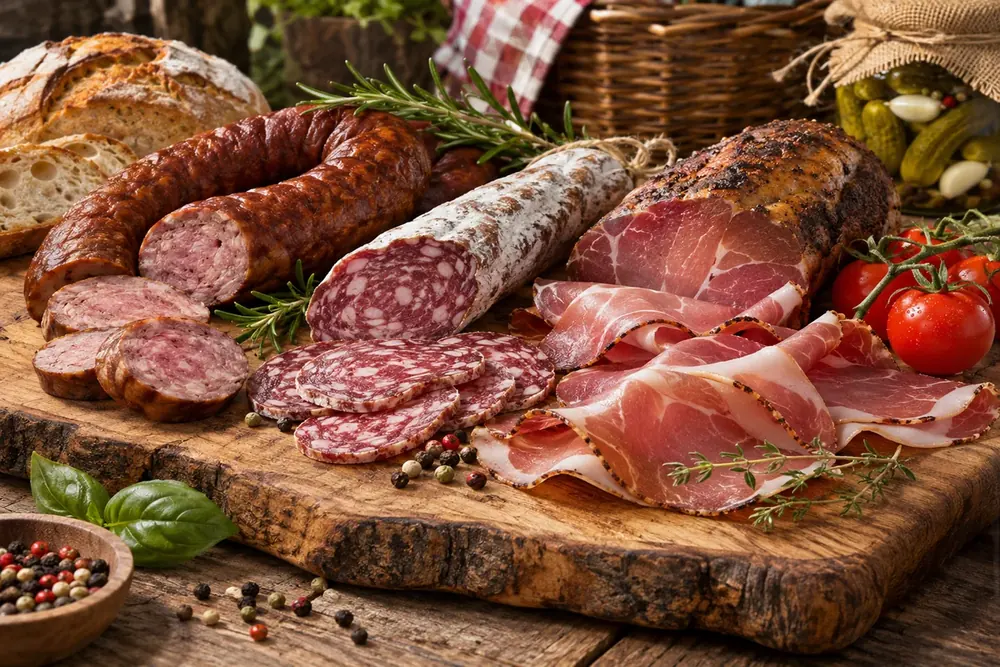

Фермерская ярмарка
4 сезона
Вкусно. Свежо. По-приморски!
Овощи с грядки, домашние деликатесы и продукты от местных производителей — всё, за что мы любим настоящую ярмарку.
Фотография фермерской пары создана как иллюстрация и не изображает реальных участников.
Для гостей и участников
Режим работы ярмарки «4 сезона»
Торговые места должны быть готовы к открытию, а территория освобождена после завершения работы.
Заезд и подготовкаПодготовка торговых мест к открытию
ТорговляТорговые места готовы к 08:00
Уборка и выездПогрузка оборудования; территорию освободить не позднее 20:00
Движение автомобилей участников допускается с 07:00 до 08:00 и с 19:00 до 20:00, кроме случаев, согласованных с администрацией ярмарки.
Дары Приморья
С любовью к своему делу
На ярмарке встречаются продукты, в которых чувствуется забота, мастерство и щедрость нашего края.

С грядки
Овощи и фрукты

Молочная лавка
Натуральные сыры

Домашние рецепты
Мясные деликатесы

Из печи
Выпечка и сладости

Вкус лета
Заготовки и мёд
Изображения продукции созданы для оформления сайта и служат иллюстрациями; они не подтверждают наличие конкретных товаров у участников.
Встречаемся на ярмарке
Свежие продукты. Живое общение.
Приходите познакомиться с местными производителями и выбрать продукты для своего стола.
Присоединяйтесь
Как стать участником
Выберите свою категорию и свяжитесь с организаторами, чтобы получить актуальный комплект форм и условий участия.
Юридические лица
Организаторы подскажут актуальный список документов и порядок подачи заявки.
Открыть перечень документовИндивидуальные предприниматели
Получите перечень документов для индивидуального предпринимателя напрямую у организаторов.
Открыть перечень документовГраждане, ЛПХ и КФХ
Уточните условия и комплект документов для граждан, ЛПХ и КФХ у организаторов.
Открыть перечень документовВажная информация
Документы ярмарки
Откройте оригинальные перечни и формы участия. Публичная оферта доступна в PDF-источнике организатора.
Наше сообщество
Реестр участников
В реестре — участники, прошедшие верификацию и подписавшие согласие на публикацию. На главной — четыре участника; полный каталог доступен отдельно.
Обратная связь
Ваше мнение важно
Поделитесь впечатлением о ярмарке или задайте вопрос организаторам через форму обратной связи.
До встречи
Найдите свою ярмарку
Ярмарка «4 сезона» — Владивосток, улица Жигура, 2Б.
Открыть адрес на картеЯрмарка
«4 сезона»
Владивосток
ул. Жигура, 2Б